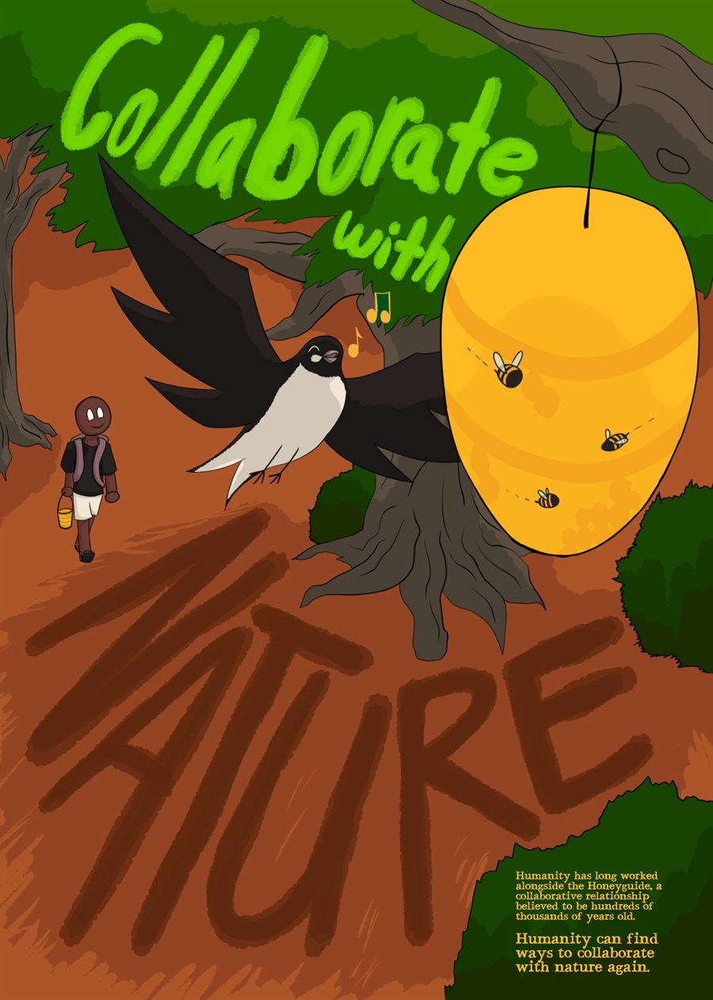
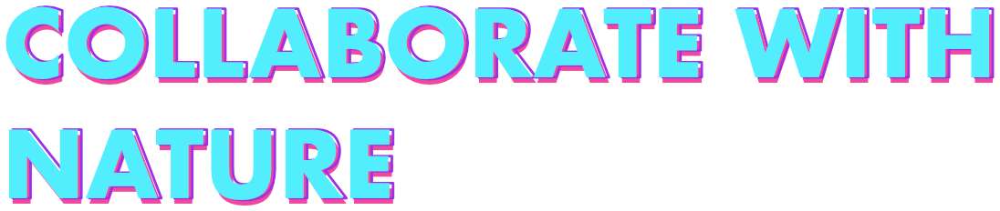
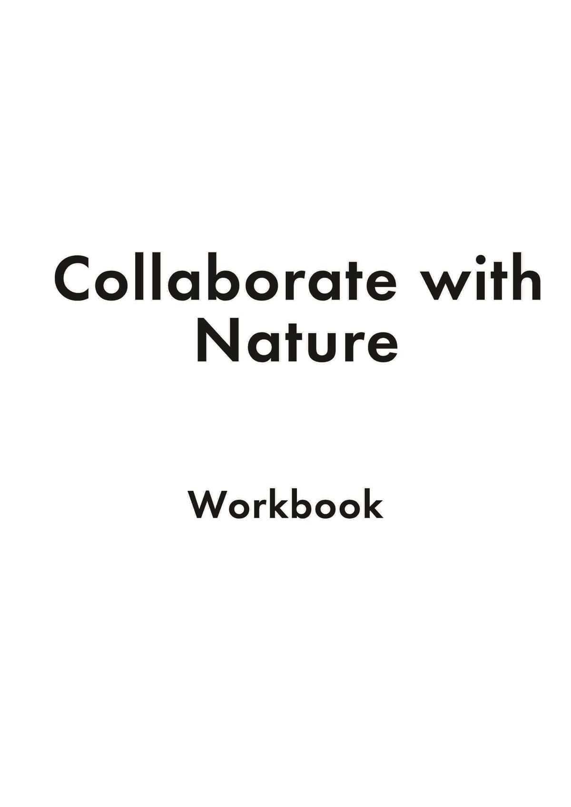

← Back to work
With the world in such a sad state, it can feel especially hard to have any semblance of hope left in humanity. This is even more true for young people, who will have to inherit this world and navigate it. And with all the doom and gloom about, I wanted to show a small bit of joy to break up the hopelessness, while also showing that humanity can find ways to collaborate with nature. And so, for this project, it was all about figuring out how to do that, which I did through the ancient, symbiotic relationship between humans and the Honeyguide. Building off of the value 'Whanaungatanga', I created a joyful and mildly educational poster to give a bit of hope back to the people.
Skills utilised in this project: Illustration - Affinity - MediBang - Iteration - Layout
Project workbook
Click the page, or use Next and the left and right arrow keys, to read through the workbook and see how I created my Collaborate with Nature poster, starting with the value of Whanaungatanga.
